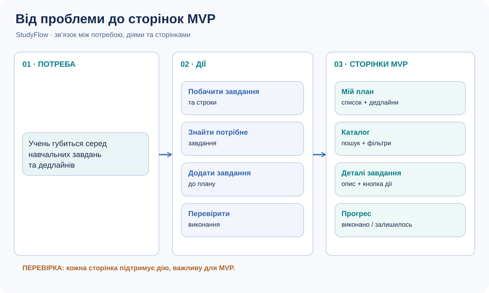
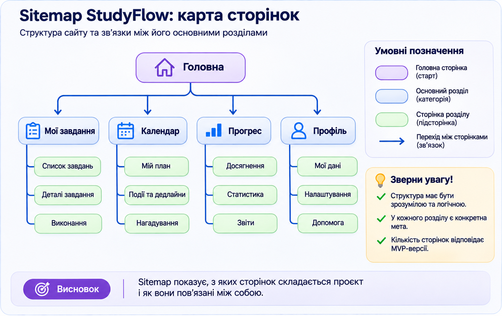
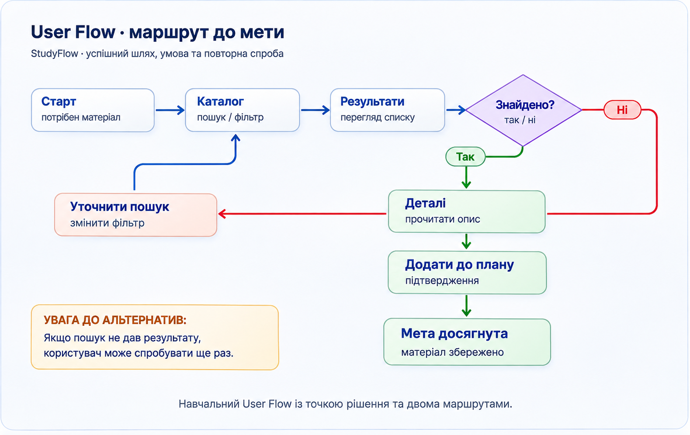
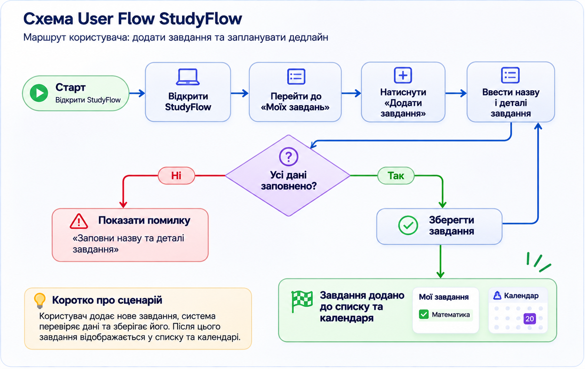
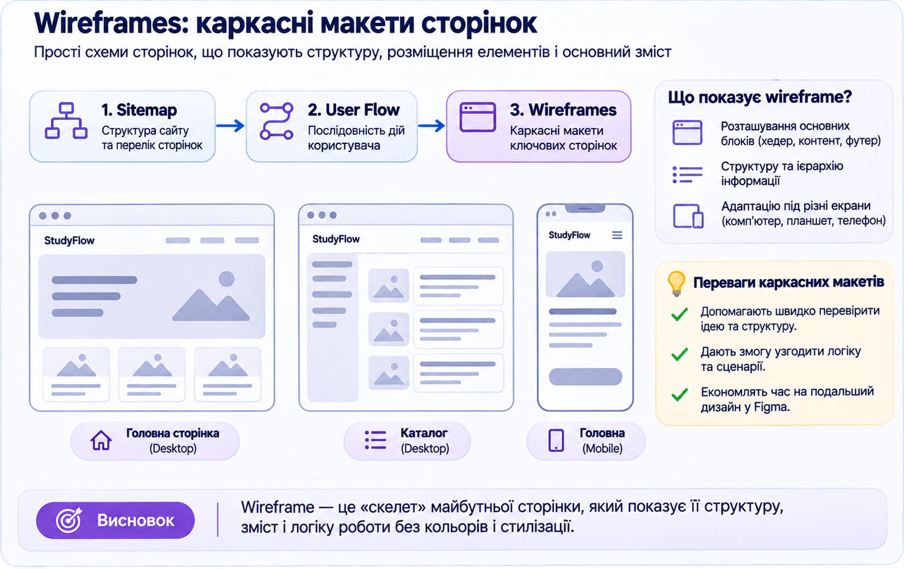

Не вдале рішення
Окрема сторінка для кожної дрібної дії: «додати», «редагувати», «підтвердити», «скасувати» — без пояснення навіщо.
10 КЛАС · 90 ХВИЛИН · ПРОЄКТНА ЛАБОРАТОРІЯ
Від ідеї випускного проєкту — до карти сторінок, сценарію користувача та каркасних макетів у Figma.
ПЕРЕД ПОЧАТКОМ
У Місії 01 ти перевірив власну дизайн-систему. Сьогодні не створюємо нові кольори або компоненти: визначаємо, які сторінки потрібні продукту, як користувач переходить між ними та що міститься на кожній сторінці.
Маєш JSON-звіт попередньої місії? Імпортуй його, щоб не вводити назву проєкту, проблему та покликання на Figma повторно. Результати аудиту збережемо як довідку для проєктування сторінок.
Дані Місії 01 ще не імпортовано.
Імпорт не обов'язковий. Якщо поля Місії 02 вже заповнені, сторінка запитає підтвердження перед їх заміною. Результати аудиту не змінюють автоматично твої нові рішення.
MVP (Minimum Viable Product) — мінімальна версія продукту, яка дає змогу виконати його основну корисну функцію. На цій парі ми проєктуємо сторінки саме для MVP, а не для всіх можливих майбутніх функцій.
15 ХВ · ТЕОРІЯ + ПРАКТИКА
Спочатку визначаємо, що користувач має зробити. Лише після цього вирішуємо, які сторінки потрібні.
Функція описує дію («переглянути завдання»).
Сторінка — місце інтерфейсу, де користувач виконує цю дію («Мої завдання»).
Кілька пов’язаних функцій можуть працювати на одній сторінці; не варто створювати новий екран для кожної кнопки.

Окрема сторінка для кожної дрібної дії: «додати», «редагувати», «підтвердити», «скасувати» — без пояснення навіщо.
Об'єднати пов'язані дії в логічні розділи. Нову сторінку додавати лише тоді, коли вона має окрему роль у сценарії.
20 ХВ · СХЕМА У FIGMA
Інформаційна архітектура показує, як організовано інформацію та як користувач знаходить потрібний розділ.
Sitemap (карта сторінок) — схема сторінок і зв'язків між ними. Вона показує структуру продукту, а не зовнішній вигляд кнопок. Верхній рівень зазвичай містить основні розділи, нижче — вкладені сторінки або підрозділи.

02 · UX Architecture (або окремий розділ у файлі).Sitemap · MVP.20 ХВ · ЛОГІКА КОРИСТУВАЧА
Карта сторінок відповідає на питання «Що є в продукті?». User Flow — «Як людина досягає своєї мети?»
User Flow — послідовність кроків, які проходить користувач для виконання завдання. Сценарій має початок, ціль, дії та, за потреби, розгалуження: наприклад, «Знайдено потрібний матеріал?».


Показує структуру: які сторінки існують та як вони згруповані.
Показує поведінку: що робить користувач і що відбувається після його вибору.
User Flow · Main task.25 ХВ · КАРКАСНІ МАКЕТИ
Тепер перетворюємо структуру на макети. Поки без декоративного оформлення — увага до змісту, ієрархії та розміщення елементів.
Wireframe (каркасний макет) показує, які блоки є на сторінці, де вони розташовані та як користувач взаємодіє з ними. На цьому етапі достатньо простих форм, умовних зображень і коротких текстових підписів. Кольори та фінальні стилі з дизайн-системи застосовуватимемо на наступній парі.

Wireframes · Desktop або окремі фрейми для кожної основної сторінки.10 ХВ · ШІ + РЕФЛЕКСІЯ
ШІ може допомогти знайти прогалини у структурі, але його висновки потрібно зіставити зі своїми схемами та цілями MVP.
Недостатньо попросити «оцінити мій дизайн». Потрібно надати ШІ контекст, опис сторінок, сценарій та критерії оцінювання. Якщо надіслати скриншоти, модель може помилково інтерпретувати стрілки або пропустити дрібні підписи — перевір це самостійно.
Ти — UX-аналітик і наставник учня 10 класу. Я проєктую MVP власного цифрового продукту. Оціни мої матеріали: опис проблеми, перелік сторінок, sitemap, user flow та wireframes (додаю скриншоти або текстовий опис). Перевір: 1) чи всі сторінки потрібні для основного сценарію; 2) чи немає зайвих або відсутніх кроків; 3) чи зрозуміла навігація; 4) чи кожна сторінка має головну дію; 5) чи є глухі кути. Назви до трьох найважливіших зауважень у форматі: спостереження → доказ → ризик → як перевірити у Figma → пропозиція. Не вигадуй елементів, яких не видно. Відокремлюй факти від припущень. Не пропонуй розширювати MVP без обґрунтування.
ДОКАЗИ ТА РІШЕННЯ
Запиши принаймні одне важливе рішення: що обрав, чому і на чому ґрунтується вибір. За потреби додай ще записи.
САМООЦІНЮВАННЯ
Оціни виконану роботу за кожним критерієм від 0 до 3 балів. Це самооцінка, остаточну оцінку виставляє вчитель.
Самооцінка: / 12
ЗАВЕРШЕННЯ
Для Moodle: завантаж TXT-звіт. Для наступної пари: збережи JSON — він містить відповіді та дозволяє їх відновити в цьому робочому просторі.
Автозбереження працює лише в цьому браузері й на цьому пристрої. Не очищуй дані браузера до експорту. Скриншоти та самі файли Figma до звіту не вбудовуються — у звіті зберігаються покликання.
Ілюстрації створено спеціально для цієї навчальної сторінки. Наведений StudyFlow — умовний приклад, а не шаблон, який потрібно копіювати.